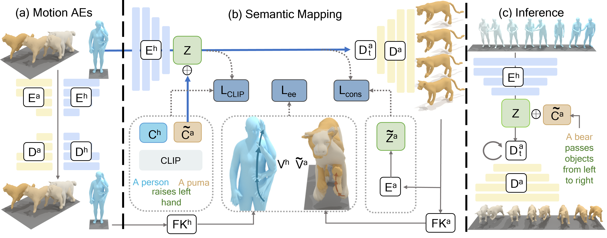

"A dog jumps forward and swings its arms.""A bear passes objects from the left to the right initially heavy but then lighter objects.""A moose jogs on the spot.""A dog puts its hands on the floor and does a handstand."
Our paper aims to generate diverse and realistic animal motion sequences from textual descriptions, without a large-scale animal text-motion dataset. While the task of text-driven human motion synthesis is already extensively studied and benchmarked, it remains challenging to transfer this success to other skeleton structures with limited data. In this work, we design a model architecture that imitates Generative Pretraining Transformer (GPT), utilizing prior knowledge learned from human data to the animal domain. We jointly train motion autoencoders for both animal and human motions and at the same time optimize through the similarity scores among human motion encoding, animal motion encoding, and text CLIP embedding. Presenting the first solution to this problem, we are able to generate animal motions with high diversity and fidelity, quantitatively and qualitatively outperforming the results of training human motion generation baselines on animal data. Additionally, we introduce AnimalML3D, the first text-animal motion dataset with 1240 animation sequences spanning 36 different animal identities. We hope this dataset would mediate the data scarcity problem in text-driven animal motion generation, providing a new playground for the research community.
Visual Comparison
T2M-GPT
MotionGPT
MDM
MotionDiffuse
OMGPT (Ours)
"A bear uplift his right hand and moving it fast again and again."
"A bear is waving with his right hand."
"A dog jumps forward and swings its arms."
"A bear standing brings hands together in front of him to applaud."
Ablation Study
A
B
C
D
E
"A puma throws an object with their right hand and catch an object with both hands."
More Our Results
"A dog raises right hand, waves, ..."
"Moose stretches by wrapping one arm ..."
"Dog stomps his left feet."
"A dog walks backwards."
"A puma raises their left hand ..."
Framework Overview

We train part (a) and part (b) at the same time.
In (a), we train two motion autoencoders simultaneously, each within their domain.
In (b), human motion is fed into the human motion encoder to produce a semantic-aware, subject-invariant latent code Z.
The CLIP feature of the subject-translated sentence and Z are concatenated together and passed into the animal decoders.
During inference in (c), we generate animal motions based on human motion sequences sampled from generative models.
Details on the architecture, loss functions, and inference process are elaborated in the paper.
Bibtex
@misc{yang2023omnimotiongpt,
title={OmniMotionGPT: Animal Motion Generation with Limited Data},
author={Zhangsihao Yang and Mingyuan Zhou and Mengyi Shan and Bingbing Wen and Ziwei Xuan and Mitch Hill
and Junjie Bai and Guo-Jun Qi and Yalin Wang},
year={2023},
eprint={2311.18303},
archivePrefix={arXiv},
primaryClass={cs.CV}
}